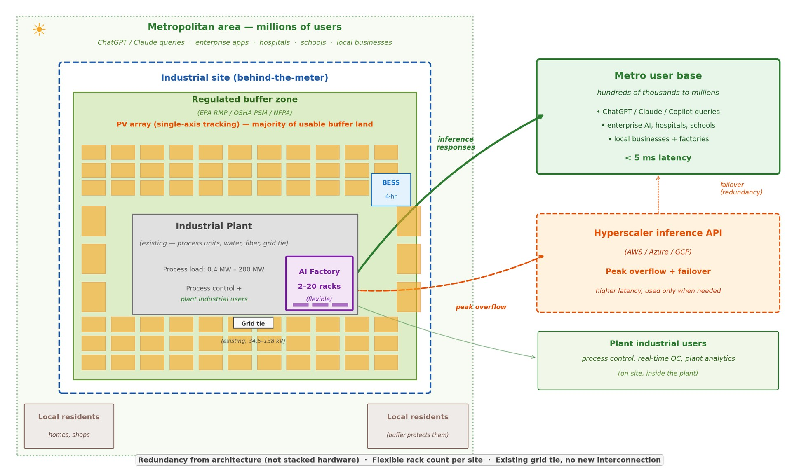
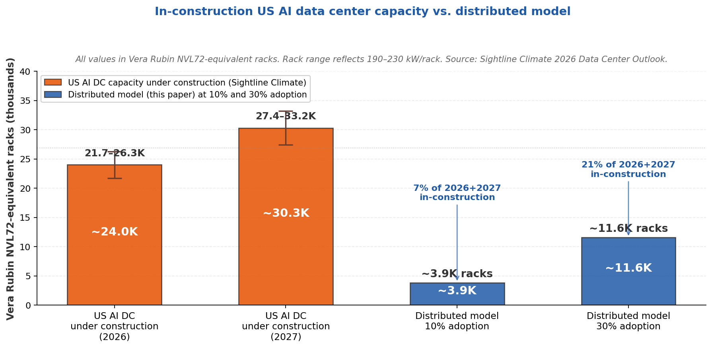

Part 1: Can industrial mandatory vacancy ease the AI infrastructure bottleneck?
Building AI data centers (or AI factories) seems to be getting harder. We are hearing long environmental reviews, limited water resources, multi-year waits for gas turbines and transformers, local noise complaints. And even after all of that is bypassed, the capital cost is heavy, and recent events — the first confirmed military attack on hyperscale data centers in the UAE and Bahrain in March 2026 [16] — have made it clear that the centralized hyperscaler model carries a real network-concentration risk. Table 1 summarizes these.
Table 1. The bottlenecks shaping AI infrastructure today
| Constraint | Current reality | Timeline impact |
|---|---|---|
| Grid interconnection | 12,000+ projects queued across US ISOs and utilities | 3–7 year wait |
| Environmental review (CEQA/NEPA) | Multi-year EIS process | 2–5 year delay |
| Water permit | Contested in drought regions | 1–3 year delay |
| Gas turbine (backup power) | Global procurement backlog | 18–36 month lead time |
| Large transformer (100 MVA+) | Manufacturer capacity limits | 24–36 month lead time |
| Community opposition | Noise, visual, cooling footprint | Unpredictable |
| Capital concentration / attack surface | March 2026: military strike on hyperscale sites in UAE/Bahrain | Structural vulnerability |
One thing worth questioning: most discussion treats AI data centers as a single category regardless of workload. But inference, not training, is widely expected to dominate AI compute long-term — Jensen Huang puts it at roughly 80% inference vs 20% training [17], a view Andrew Feldman echoes from the Cerebras side [18].
The implication for infrastructure is important. A single NVIDIA Vera Rubin NVL72 rack holds 20.7 TB of HBM4 [2] — enough to host a GPT-4-class model in memory on one rack. Cerebras CS-3 reaches a similar outcome through a wafer-scale architecture with 21 PB/s on-chip memory bandwidth [12]. If those numbers hold, inference does not need the same scale of infrastructure as training: a four-rack modular AI factory could run frontier models with redundancy in a footprint smaller than a single-family home, drawing 500 kW to 20 MW. More importantly, such factories could be distributed to every city, close to the users.
Table 2. Rack sizing reference — what each deployment can run
| Size tier | Racks | HBM4 total | IT power | What this can run |
|---|---|---|---|---|
| Small | 1–2 | 20–40 TB | 0.2–0.4 MW | Single frontier model such as GPT-4 or Claude 3 Opus-class (~1–2T params); serves ~10K–100K users (small city, industrial park). 2 racks give N+1 redundancy. |
| Medium | 4–6 | 80–125 TB | 0.8–1.1 MW | Current frontier models (GPT-5, Claude 4, Llama 4 405B) with multiple concurrent instances; serves ~100K–500K users (a mid-sized city). |
| Large | 9–25 | 185–515 TB | 1.7–4.8 MW | Multiple models running in parallel (GPT-5 + Claude 4 + DeepSeek R1), including reasoning models with long context; serves ~500K–2M users (a large metro). |
| XL | 33–74 | 680 TB – 1.5 PB | 6–14 MW | Next-generation models (10T+ parameters) at hyperscaler-class throughput; serves 2M+ users (a major metro area such as Chicago, Houston, or a multi-city region). |
All based on NVIDIA Vera Rubin NVL72 at 190 kW / 20.7 TB HBM4 per rack [2, 3]. Cerebras CS-3 offers an alternative architecture at ~23–30 kW per system with 44 GB on-chip SRAM plus optional MemoryX for larger models [12]. Cerebras has demonstrated Llama 3.1 405B and DeepSeek R1 in production.
That raises a question: why not co-locate these smaller AI factories inside existing industrial plants, operating behind the meter?
Most industrial plants already have what a modular AI factory needs — water for cooling, an established electrical service sized for peak operations, on-site fiber for process control, 24/7 staff, and physical security. The size of the AI factory at any given site is not a product specification to be sold off the shelf. It is sized to whatever the host site can actually support: how much electrical capacity is left in the existing service, how much water is available for cooling, how much regulated buffer land can host solar PV and battery storage, and how much local inference demand the site is well-positioned to serve. Different host plants will therefore end up with very different factory sizes — determined bottom-up by what the site can physically support, rather than top-down from a target capacity chosen in advance (which is how a typical greenfield data center is sized).
To make the electrical question concrete, take the municipal wastewater treatment plant (WWTP) case that Part 2 will examine in detail. A typical 30 MGD WWTP draws roughly 1.8–2.5 MW of electrical power on average — mostly aeration blowers, influent and effluent pumps, and mixers — with a daily peak near 2.5–3.2 MW [19]. The existing utility service feeding this load is usually a 4–6 MW interconnection at 12 to 34.5 kV, sized to cover storm-flow peaks and motor inrush with a comfortable margin. Adding a 1–2 MW AI factory typically fits inside that margin during normal operations.
For the rest of the variability — on both the plant side and the AI factory side — the colocated AI center is designed to manage its own energy and traffic. The buffer-zone PV plus a 4-hour BESS shave daily peaks and cover short on-site shortfalls; beyond that, because inference demand is bursty by nature, any overflow the local envelope cannot serve is routed to a hyperscaler API. The local racks keep serving steady-state demand at sub-5 ms latency, while the overflow portion accepts the hyperscaler’s higher latency in exchange for guaranteed capacity. The host plant’s operations are never put at risk either way: the AI factory sits behind the plant’s existing meter as load-side equipment and can be curtailed at any time without affecting the regulated process.
If a specific site does need more grid capacity than this, the answer is a case-by-case distribution-level upgrade — typically either replacing the existing service transformer with a larger unit, or paralleling a second feeder and transformer dedicated to the AI load [13]. Either way this is routine distribution work on an existing commercial service, not a new high-voltage transmission interconnection (which runs 3 to 7 years).
Put together, this pattern flips several items in Table 1 — no new grid interconnection, no new land acquisition, no new water permit, no standalone transformer procurement, fewer residential neighbors to object to, and a distributed footprint in place of a single concentrated attack surface. The approval pathway collapses from 5–8 years to 4–7 months because no new utility infrastructure is being added beyond what a routine commercial service upgrade can handle. The AI factory is load-side equipment on an existing commercial service, which is regulatorily routine.
Figure 1. Distributed AI inference architecture on an industrial buffer zone

Industrial plant sits in the center of the site (grey, existing); the AI factory occupies a small corner adjacent to the plant. The regulated safety buffer zone surrounds the plant and hosts the PV array (most of the buffer) plus a small 4-hour BESS. Local residents live outside the buffer. The AI factory serves metropolitan-area users — hundreds of thousands to millions of people within ~20 km — at sub-5 ms latency. Peak traffic and failover route to a hyperscaler API.
An idea needs numbers to back it up. The following is a set of first-principles estimates across eight typical industrial site categories. Each type carries its own mandatory land requirements for fire access, firewater monitor coverage, operational exclusion zones, and RMP/PSM/NFPA safety setbacks — for example, a typical WWTP reserves roughly 10–20% of its regulated area for fire access and operational clearance, a large petrochemical complex closer to 40–50% (process units, tank farm berms, loading racks). That mandatory portion is set aside, and only the remaining usable area is counted for PV. Rack counts assume Vera Rubin NVL72 at 190 kW per rack [3]. Results are in Table 3 and Figure 2.
Table 3. Industrial site types: US counts and infrastructure readiness
All estimates assume single-axis tracking PV and Vera Rubin NVL72 at 190 kW per rack [3]. AI factory sized to match annual PV generation for PV-matched sites; small chemical plant relies primarily on grid headroom with PV as supplement. Workload tiers refer to Table 2. Bracketed numbers [N] reference the Sources list at the end.
| Site type | US count | Total regulated area | Usable buffer | PV capacity | Racks | Grid voltage | Fiber availability | Suitable workload tier |
|---|---|---|---|---|---|---|---|---|
| Small–medium specialty chemical | ~1,200 [1,4] | 3–18 ha | 1.5–9 ha | 1.2–6 MW | 4–6 | 34.5–69 kV | Usually good (industrial parks) | Medium: ~100K–500K users |
| Large petrochemical complex | ~80 [5] | ~500 ha | ~150 ha | ~101 MW | ~74 | 110–220 kV | Excellent | XL: 2M+ users |
| Pharmaceutical API plant | ~200 [6] | ~20 ha | ~10 ha | ~6.7 MW | 6 | 34.5–69 kV | Excellent (biotech clusters) | Medium: ~100K–500K users |
| Ammonia / fertilizer plant | ~30 [7] | ~30 ha | ~15 ha | ~10 MW | 9 | 69 kV | Limited (rural) | Large: ~500K–2M users |
| Food processing (NH3 refrig.) | ~1,500 [8] | ~6 ha | ~3 ha | ~2 MW | 2 | 34.5 kV | Mixed (rural poor / suburban OK) | Small: ~10K–100K users |
| Large refrigerated cold storage | ~1,000 [9] | ~4 ha | ~2 ha | ~1.5 MW | 1–2 | 12–34.5 kV | Good (logistics hubs) | Small: ~10K–100K users |
| WWTP — mid-to-large (10–1,000 MGD) | ~1,500 [10] | 10–150 ha | 5–67 ha | 3–45 MW | 2–25 | 34.5–138 kV | Excellent (always urban) | Small to Large; up to a major metro |
| LNG terminal | ~170 [11] | ~150 ha | ~60 ha | ~40 MW | 33 | 69–138 kV | Variable (coastal) | XL: 2M+ users |
Figure 2. US site count vs. theoretical aggregate AI factory opportunity

At 10–30% adoption across these categories, aggregate capacity is roughly 3,850–11,550 Vera Rubin NVL72-equivalent racks — about 7–21% of US AI data center capacity currently under construction for 2026–2027 (Sightline Climate 2026 Data Center Outlook [14]). Midpoint ~15% contribution to near-term in-construction capacity.
What this looks like across sites. Municipal wastewater treatment plants stand out for sheer distribution — essentially every US city has one, they are always urban or suburban with mature grid and fiber, and 1,500 mid-to-large sites are spread across the country. Large petrochemical complexes are technically strongest (110–220 kV substations, extensive internal fiber) but carry organizational friction and concentrate on the Gulf Coast. Pharmaceutical API plants cluster in four biotech corridors (Princeton–New Brunswick, Boston–Cambridge, Research Triangle, Indianapolis). Ammonia/fertilizer plants have the most buffer land per site but often lack rural fiber. Food processing and cold storage are numerous but small per-site — best for 1–2 rack deployments close to users. The opportunity concentrates where fiber, buffer land, and grid voltage align — it is not uniform.
This model is also consistent with Cerebras’s own deployment pattern — their facilities range from 2.5 MW (Stockton, CA) to a planned 100 MW in Guyana co-located with a gas-to-energy plant, rather than gigawatt campuses [12]. The distributed, modular, co-located approach is already being validated at scale by inference-focused AI hardware vendors.
Pharmaceutical API manufacturing. Sites cluster in biotech corridors (Princeton–New Brunswick, Boston–Cambridge, Research Triangle, Indianapolis) where fiber and grid are solid. Pfizer Kalamazoo, Merck Rahway, Novartis East Hanover, Eli Lilly Indianapolis are examples. Formulation-only plants have much smaller solvent inventories and correspondingly smaller buffers, so they are not the interesting subset.
WWTPs. Every US city has one. Always urban or suburban, so fiber is available and grid service is mature. The trade-off is municipal ownership — ground leases require city council approval and potentially competitive RFP processes, which is slow.
Food processing. Two populations. Large meatpacking plants (Tyson, JBS, Cargill, Smithfield) are rural — near livestock, far from metro fiber. A Tyson beef plant in Lexington, Nebraska has solid grid capacity (megawatts of refrigeration load) but limited high-bandwidth fiber. New fiber runs can be 12–18 months and meaningful capex. Dairy and cold storage facilities, by contrast, are often suburban near population centers and regional logistics hubs; fiber is usually fine.
Ammonia / fertilizer plants. Largest per-site buffers among manufacturing but located near cheap natural gas, which means rural (Louisiana, Iowa, Oklahoma). Fiber is a real gap at most of these sites.
LNG terminals. Coastal, some remote. Gulf Coast terminals generally have good fiber via the petrochemical corridor backbone. East Coast import terminals are better connected. Alaska and outlier locations are questionable.
Large petrochemical complexes. Best on every technical dimension: 110–220 kV dedicated substations, extensive internal fiber for process control, excellent external fiber. The constraint is political — these are high-value operating assets and any buffer-zone change goes through extensive HAZOP review.
Cost is the obvious follow-up question. The honest answer: it depends on the site, and a precise per-token comparison requires a full site-level model. Rough first-principles bounds can at least frame what’s plausible.
Electricity cost range. A Vera Rubin NVL72 rack draws ~190 kW at ~1.3 PUE, so roughly 2,160 MWh per rack per year.
The conclusion: on electricity cost alone, the distributed model is plausibly competitive with a non-PPA hyperscale operator, and somewhat more expensive than a top-tier hyperscale with a 20-year renewable PPA. Call it within ±20–30% of hyperscale electricity cost.
Capex and lifecycle. What tilts in favor of the distributed model is infrastructure lifecycle mismatch. PV arrays last 25–30 years. BESS lasts 10–15 years. AI hardware lasts 3–5 years before a GPU refresh. A behind-the-meter PV+BESS installation built once can support 4–6 generations of GPU hardware refresh on the same site — rack replacement only, no new grid interconnection, no new transformer procurement, no new substation, no new land. By contrast, each major hyperscale expansion typically requires new utility infrastructure with multi-year lead times.
20-year TCO bounds (rough). Putting electricity and infrastructure together, a 20-year per-rack TCO comparison lands in a wide band — distributed could be anywhere from 10–20% cheaper (if the site has good solar resource + cheap colocation lease + multiple GPU refresh cycles) to 10–20% more expensive (if the site has poor solar + small scale + expensive lease + single-generation deployment). Taking the midpoint, the distributed model is roughly cost-competitive with hyperscale on a 20-year TCO basis, with the exact number being site-dependent. Part 2 will work through one specific WWTP in detail to narrow this down.
Market size. What makes the 15% contribution figure interesting from a vendor perspective is the market it implies. At ~$3M per Vera Rubin NVL72-equivalent rack (NVIDIA) or ~$2–3M per Cerebras CS-3 system, the hardware market for a 15% adoption scenario (5,800 racks) is roughly $17 billion in GPU/accelerator spend, with another ~$7 billion in PV, BESS, cooling, and site integration. Over a 20-year site life with 4–6 GPU refresh cycles, cumulative hardware spend approaches $70–90 billion.
The structural implication matters more than the raw number. Hyperscale AI purchases are single GW-scale contracts, stable 5-year PPAs, and unified hardware stacks — this favors NVIDIA and effectively locks out modular inference accelerators. A distributed market of thousands of 2–20 rack deployments, each with independent procurement and 3–5 year refresh windows, has a completely different structure: single-site decision-making, multi-vendor feasibility, and workloads that are almost entirely inference — which happens to match the sweet spot of wafer-scale and modular inference hardware. For Cerebras, Groq, and similar vendors optimized for dense inference, a distributed market that captures 15% of near-term in-construction capacity could be the difference between a niche position and a major platform — potentially a multi-billion-dollar order flow if even a meaningful share of those sites pick non-NVIDIA accelerators.
The practical takeaway: for an AI infrastructure buildout widely called “the largest in history,” a model that can contribute ~15% of near-term in-construction capacity on a renewable-primary, geographically distributed basis, at cost levels broadly comparable to hyperscale, seems worth investigating. A 15% contribution to a generational infrastructure push is not trivial, especially given the faster deployment timeline — and the market structure favors modular, inference-optimized hardware vendors in a way that hyperscale does not.
This model targets distributed 1–20 MW inference nodes on land adjacent to industrial users. It is not a hyperscale alternative. Retired power plants with existing 115–345 kV transmission connections and transferable ISO interconnection agreements are a different opportunity class, and Applied Digital, Crusoe, and Data4 are already pursuing that for 50–200 MW deployments. Those assets have their own constraints (coal combustion residue liabilities, rural fiber, water rights re-permitting) but that is a different conversation.
The numbers in Table 3 are first-principles estimates. Site counts come from public federal datasets (see Sources). The match between those counts and actual buffer-zone viability at the specific site level is not audited here. What the analysis shows is that the physics and regulatory pathway hold up across the site types examined — enough to justify deeper site-level work.
A few honest limits:
Part 2 will take one typical-size municipal wastewater treatment plant (30 MGD — the rough average for a US city serving ~300,000 residents) and work through the full engineering simulation: PV layout sizing on the actual site geometry, BESS dispatch with Pyomo, power flow and load interaction with pandapower, a 20-year capex and opex rollup with multiple GPU refresh cycles, and an end-to-end estimate of tokens served per dollar. The code will be published alongside.
Part 3 will demonstrate the inference layer on the same site: a working multi-agent system on a local GPU cluster, integrated with plant process data and serving both the plant’s own operations and local metro inference demand.
This is an idea, sketched at the first-principles level. Real deployments will run into site-specific constraints not captured here — grid studies, cooling details, HAZOP reviews, local permitting, ground lease structures. The goal of this series is to explore whether the overall direction holds up; the detailed engineering is in Part 2. Feedback from operators, utility engineers, AI infrastructure architects, regulators, and anyone with hands-on experience in similar deployments is welcome.
[1] US EPA Risk Management Program rule (40 CFR Part 68), 2024 update. Regulates ~11,740 facilities across petroleum refineries, chemical manufacturers, water/wastewater treatment systems, chemical and petroleum wholesalers, food and beverage manufacturers with ammonia refrigeration, agricultural chemical distributors, and other RMP-regulated facilities. EPA, Safer Communities by Chemical Accident Prevention Rule (March 2024).
[2] NVIDIA Vera Rubin NVL72 platform specifications. 72 Rubin GPUs × 288 GB HBM4 per GPU = 20.7 TB HBM4 per rack; 3.6 EFLOPS NVFP4 inference per rack; NVLink 6 switch. NVIDIA press release and CES 2026 keynote.
[3] Vera Rubin NVL72 rack power specifications. Max Q: ~190 kW rack TDP; Max P: ~230 kW rack TDP. Source: Ming-Chi Kuo supply chain checks (Jan 2026); SemiAnalysis Vera Rubin BoM and Power Budget Model (Feb 2026).
[4] US chemical manufacturing establishments (NAICS 325). US Census Bureau County Business Patterns. RMP-triggering subset per EPA 2024.
[5] US petroleum refineries and large petrochemical complexes. 132 operable refineries as of January 2025. US EIA Refinery Capacity Report (June 2025). Large petrochemical complexes estimated at ~80 global-scale sites.
[6] US pharmaceutical API manufacturing sites. The US accounts for 8% of total global active API DMFs as of 2024, with ~150–250 US API manufacturing sites. US Pharmacopeia, Medicine Supply Map (Jan 2026).
[7] US ammonia/fertilizer production plants. 30 operating ammonia plants in the US as of 2023, with 9 new plants proposed and 3 expansions. Environmental Integrity Project, The Fertilizer Boom (2023).
[8] US food processing plants with anhydrous ammonia refrigeration. USDA FSIS inspects ~6,800 meat, poultry, and egg product plants; large HACCP-size subset combined with dairy, beverage, and cold storage with >10,000 lb NH3 inventory gives ~1,500 RMP-triggering sites. USDA FSIS MPI Directory (2024); EPA RMP Appendix E.
[9] US large refrigerated cold storage warehouses. “More than a thousand large cold storage warehouses spread across the country.” Center for Land Use Interpretation, Refrigerated Nation (updated 2024).
[10] US publicly-owned wastewater treatment plants (POTWs). 17,544 POTWs total as of 2022. EPA 2022 Clean Watersheds Needs Survey (2024 report to Congress); CRS Report R48565 (June 2025).
[11] US LNG facilities. 170+ LNG facilities operating in the US, including 8 operating export terminals. FERC LNG facility maps (accessed 2026).
[12] Cerebras WSE-3 / CS-3 system specifications. 4 trillion transistors, 900,000 AI cores, 44 GB on-chip SRAM, 21 PB/s on-chip memory bandwidth, 125 PFLOPS peak. Cerebras press release, Cerebras Systems Unveils World’s Fastest AI Chip (March 2024); IEEE Spectrum, Cerebras WSE-3: Third Generation Superchip for AI (March 2024).
[13] Utility distribution-level service upgrades for commercial customers. Timelines vary widely by utility, equipment availability, and whether upstream utility-side reinforcement is triggered. California CPUC energization framework (Rules 15/16, 2024) targets an average of ~182 calendar days with a maximum utility-controlled timeline of ~306–357 days for distribution service projects; Rule 21 Fast Track sets a 120 business day nominal for simpler interconnections. Custom commercial/industrial transformer procurement can run 12+ months in the current market. On running industrial sites, a separate dedicated feeder and transformer for a new load is usually preferred over swapping the main service transformer, because the outage and cutover risk to the operating plant outweighs the equipment cost; where the main service must be touched, the cutover is scheduled into a planned annual turnaround.
[14] US AI data center capacity under construction. Sightline Climate, 2026 Data Center Outlook (April 2026). Reports US AI data center capacity actually under active construction as ~5 GW for 2026 and ~6.3 GW for 2027, with an additional ~26 GW announced but not broken ground. Cited by Bloomberg and Tom’s Hardware. BloombergNEF Global Data Center Tracker corroborates ~17 GW of the ~23 GW global in-construction total as US-based (Sept 2025).
[15] Levelized cost of energy (LCOE) for utility-scale PV+BESS. Lazard, Levelized Cost of Energy+ (2024): utility-scale solar PV LCOE $24–36/MWh; solar + 4-hour battery storage combined LCOE $45–65/MWh. NREL Annual Technology Baseline 2025. Behind-the-meter deployment typically saves additional $10–15/MWh by avoiding transmission and distribution charges, though smaller-scale (1–20 MW) installations can offset this with higher per-MW capex.
[16] Military drone strikes on AWS data centers, March 1, 2026. First confirmed military attack on a hyperscale cloud provider. Two AWS sites were struck in the UAE and one in Bahrain, taking down two of three availability zones in AWS ME-CENTRAL-1 (UAE) and one in ME-SOUTH-1 (Bahrain). Outages affected Emirates NBD, First Abu Dhabi Bank, Snowflake, Careem, and others. Sources: Fortune (March 9, 2026); CNBC (March 3, 2026); Rest of World (March 2026); TechPolicy.Press (March 12, 2026).
[17] Jensen Huang on the inference share of AI compute. NVIDIA CEO, public statements at GTC 2025–2026 and subsequent investor interviews. Huang has said that inference already makes up more than 40% of NVIDIA’s data center revenue and will account for roughly 80% of long-term AI compute versus 20% for training, and that overall inference demand is “about to go up by a billion times” as AI is embedded into work and consumer applications. Cited in Bg2 Pod (Sep 2025); Yahoo Finance (Oct 2025); Dwarkesh Podcast (2025); BizTech Magazine coverage of GTC 2026 (March 2026).
[18] Andrew Feldman on AI inference as the dominant workload. Cerebras co-founder and CEO, public statements describing inference as “the dominant cost and performance bottleneck in AI.” TechArena fireside chat (2025); Bloomberg Tech Disruptors podcast (May 2025); CNBC interview (October 2025).
[19] WWTP electrical consumption benchmarks. Conventional activated sludge plants typically consume 1,000–1,500 kWh per million gallons treated; biological nutrient removal and tertiary treatment plants rise to 1,500–2,500 kWh/MG. Empirical per-plant data: DC Water Blue Plains (370 MGD, ~25 MW) and NYC Newtown Creek (310 MGD, ~22 MW) both measure ~68–71 kW/MGD, which scales to ~2.0–2.1 MW at 30 MGD. Sources: EPRI Energy Index Development for Benchmarking Water and Wastewater Utilities (2013); EPA Clean Watersheds Needs Survey (2022/2024); utility-published electrical service ratings for the named plants.